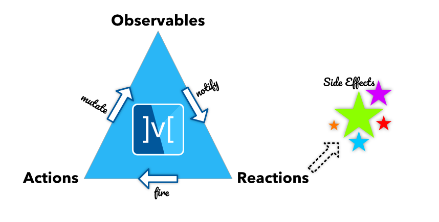

狀態管理工具 - MobX
前言
之前有介紹什麼是 BLoC。 今天來學習另一個狀態管理工具 - MobX。
類似 BLoC，但可以讓開發者更專注在資料面上且不用寫太多的程式碼。同樣是狀態管理工具，
MobX 似乎看起來更有優勢，因為我們只需要專注在哪些畫面需要哪些資料，
而不用像 BLoC 一樣，需要實作事件(Event)與狀態(State)。
MobX 的主要三大核心元件: Observables, Actions 與 Reactions，
圖是人的朋友，我們可利用下圖來了解彼此的關係。

首先，我們會先定義哪此資料是必需被觀察(Observable)的，並且能在任何行為(Action)造成的改變(Mutate)時通知(Notify)頁面並做出反應(Reaction)。
而且，在頁面做完反應(Reaction)後又可能會觸發(Fire)另一個行為(Action)。如此就型成了上述的三角狀態。
Observables
Observables代表嚮應的狀態(Reactive-State)。它可以是一個簡單的值，可以是個復雜的物件(reactive-state-tree)。
我們可以在 Widget Tree 中的任何一個地方利用觀察者(Observer)取得這些Observables。
基於這些概念，我們可以定義出如下的程式碼
class Counter {
Counter() {
increment = Action(_increment);
}
final _value = Observable(0);
int get value => _value.value;
set value(int newValue) => _value.value = newValue;
Action increment;
void _increment() {
_value.value++;
}
}
程式碼有點不易越讀性，如果在大型一點專案中會更容易有這種問題。
但是，在透過 MobX 的幫助下，我們只需要使用Annotation的方式就能簡化其程式碼。
實作中，我們會建立一個Store(Entity的概念)來存放Observable、Action、Computed Observable的資料，
並利用第三方插件 -
mobx_codegen 來幫我們產出Annotation裡的樣版程式碼
import 'package:mobx/mobx.dart';
part 'counter.g.dart';
class Counter = CounterBase with _$Counter;
abstract class CounterBase with Store {
@observable
int value = 0;
@action
void increment() {
value++;
}
}
Computed Observables
MobX 中的狀態組成為核心狀態(Core-State) + 衍生狀態(Derived-State)。
假設我們有個叫Contact的 Store，如下:
import 'package:mobx/mobx.dart';
part 'contact.g.dart';
class Contact = ContactBase with _$Contact;
abstract class ContactBase with Store {
@observable
String firstName;
@observable
String lastName;
@computed
String get fullName => '$firstName, $lastName';
}
Computed Observables也就是所謂的衍生狀態(Derived-State)，
是個以核心狀態(Core-State)或是其他衍生狀態(Derived-State)為基礎的Observable。
範例中firstName與lastName就是核心狀態(Core-State)，而fullName就是衍生狀態(Derived-State)。
fullName的值也會與firstName及lastName保持同步的狀態。
Actions
Action就是在 Store 中對Observable操作的函數。不同於直接對Observable操作，
藉由Annotation可以讓程式碼更具可讀性。此外，Action還會保證所有的改變都會在完成後被確實通知。
Reactions
在 MobX 中，它代表Observer，監聽追蹤的Observable並在有改變的時候通知Observer Widget。
Reaction有四個不一樣的形態:
-
ReactionDisposer autorun(Function(Reaction) fn)autorun會在被建立後立刻做出反應並且在任何改變的時候做出反應import 'package:mobx/mobx.dart'; String greeting = Observable('Hello World'); final dispose = autorun((_){ print(greeting.value); }); greeting.value = 'Hello MobX'; // Done with the autorun() dispose(); // Prints: // Hello World // Hello MobX -
ReactionDisposer reaction<T>(T Function(Reaction) fn, void Function(T) effect)reaction僅會在有改變的時候才會做出反應import 'package:mobx/mobx.dart'; String greeting = Observable('Hello World'); final dispose = reaction((_) => greeting.value, (msg) => print(msg)); greeting.value = 'Hello MobX'; // Cause a change // Done with the reaction() dispose(); // Prints: // Hello MobX -
ReactionDisposer when(bool Function(Reaction) predicate, void Function() effect)when僅會在條件成立的時候做出反應，而且僅會觸發一次。import 'package:mobx/mobx.dart'; String greeting = Observable('Hello World'); final dispose = when((_) => greeting.value == 'Hello MobX', () => print('Someone greeted MobX')); greeting.value = 'Hello MobX'; // Causes a change, runs effect and disposes // Prints: // Someone greeted MobX -
Future<void> asyncWhen(bool Function(Reaction) predicate)asyncWhen與when雷同，只是它回傳的是一個Future。final completed = Observable(false); void waitForCompletion() async { await asyncWhen(() => completed.value == true); print('Completed'); }
除了asyncWhen是傳回一個Future之外，其他三個都會傳回一個ReactionDisposer。
ReactionDisposer一個可以被調用以處理Reaction的函數。
Observer Widget
Observer Widget的功用是監聽其 Widget 內Observable的改變，
並且在接收Reaction發出的通知後進行畫面更新。
import 'package:flutter/material.dart';
import 'package:flutter_mobx/flutter_mobx.dart';
import 'package:mobx/mobx.dart';
part 'counter.g.dart';
class Counter = CounterBase with _$Counter;
abstract class CounterBase with Store {
@observable
int value = 0;
@action
void increment() {
value++;
}
}
class CounterExample extends StatefulWidget {
const CounterExample({Key key}) : super(key: key);
@override
_CounterExampleState createState() => _CounterExampleState();
}
class _CounterExampleState extends State<CounterExample> {
final _counter = Counter();
@override
Widget build(BuildContext context) => Scaffold(
appBar: AppBar(
title: const Text('Counter'),
),
body: Center(
child: Column(
mainAxisAlignment: MainAxisAlignment.center,
children: <Widget>[
const Text(
'You have pushed the button this many times:',
),
Observer(
builder: (_) => Text(
'${_counter.value}',
style: const TextStyle(fontSize: 20),
),
),
],
),
),
floatingActionButton: FloatingActionButton(
onPressed: _counter.increment,
tooltip: 'Increment',
child: const Icon(Icons.add),
),
);
}
總結
雖然 MobX 還是得借助額外的函式庫來幫我們產生底層的程式碼，但與 BLoC 比起來,確實可以少寫點 Code。 文件說明也蠻詳儘的，也有把使用者可能會有的疑問也在文件中加以說明。另外，也有不少範例可以參考。 但在學習的曲線上，BLoC 還是讓我覺得比較易懂跟直覺。該學哪種呢?當然是兩種都學!!!